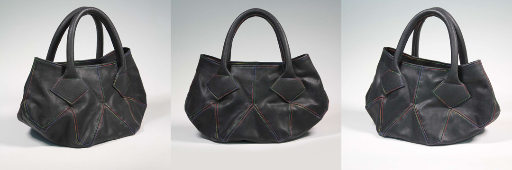
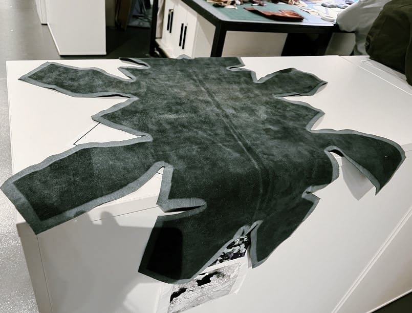
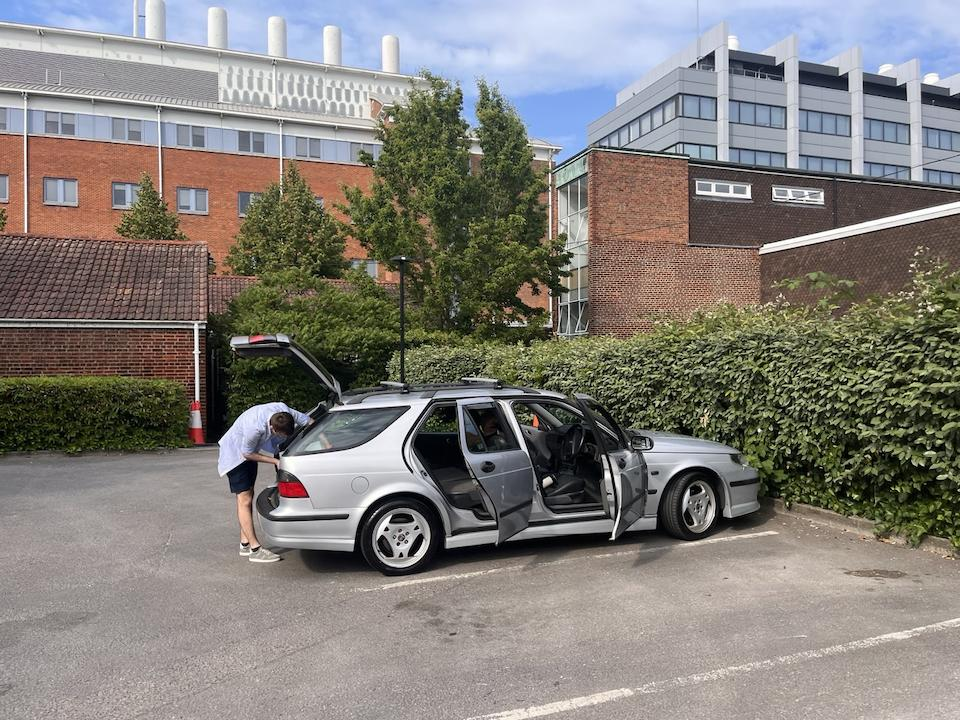
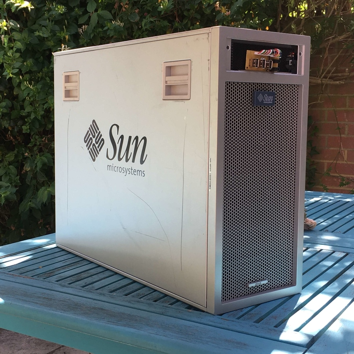
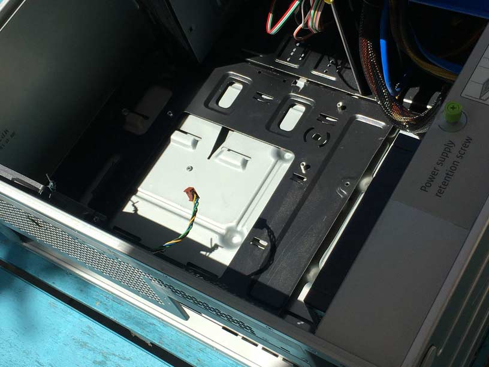
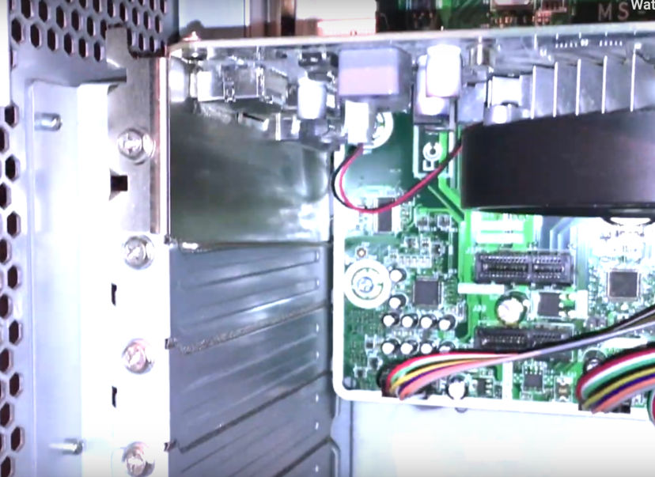
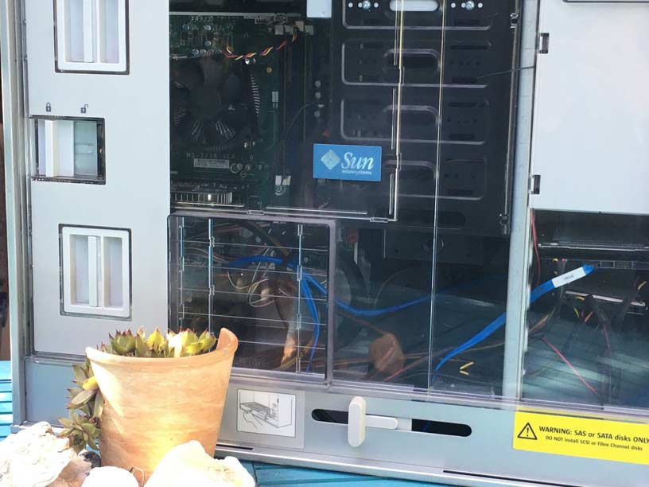
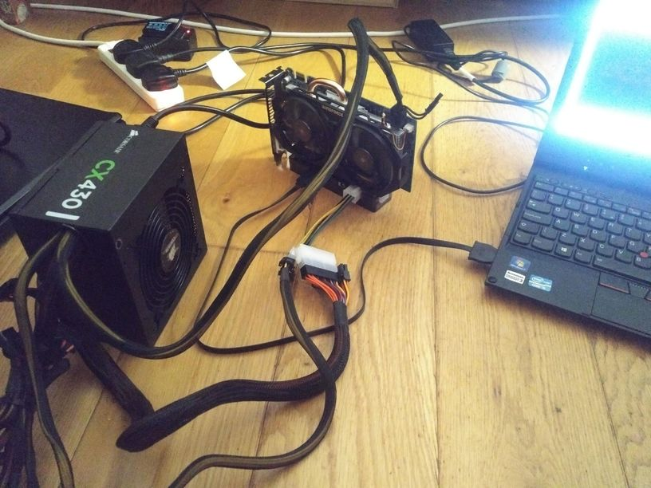
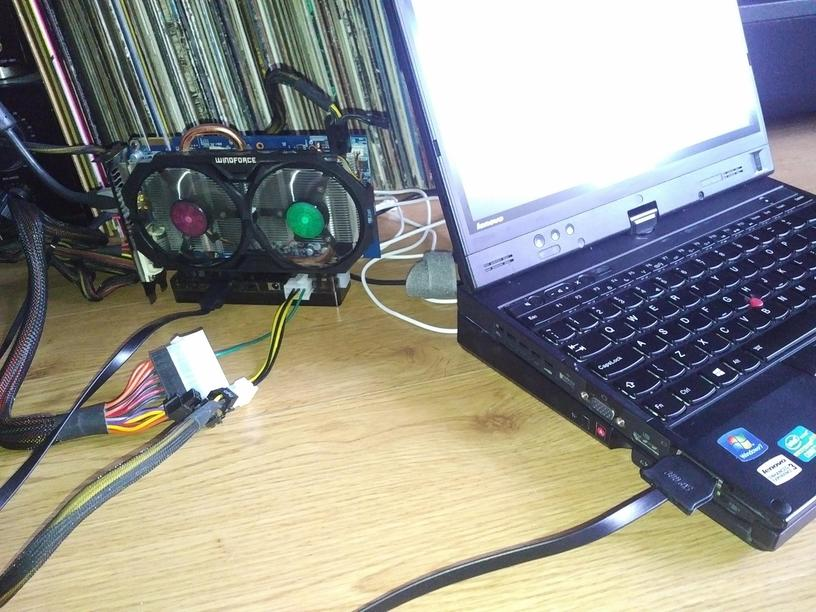

Larger projects have their own page, you can find those links here too.
January 2024
Folding Prism Leather Bag
Click on the image below to enlarge.
{kind=link}
This Buffalo Leather Tote-esque bag's main body is folded from a single geometric pattern piece. The shape isn’t rigid, but the seams and attachment points for the rope handles reinforce and hold the form.
2022 - Present
WIP Saab 9-5 Estate Sportwagon Build

Click here to visit the Saab 9-5 project page.
May 2020
Sun Microsystems Ultra 45 Chassis modification for mounting standard ATX components
This project has inspired others to pursue similar endeavours.
The Sun Ultra series is a discontinued line of workstation and server computers developed and sold by Sun Microsystems, comprising two distinct generations. The original line was introduced in 1995 and discontinued in 2001. This generation was partially replaced by the Sun Blade in 2000 and that line was in itself replaced by the Sun Java Workstation—an AMD Opteron system—in 2004. In sync with the transition to x86-64-architecture processors, in 2005 the Ultra brand was later revived with the launch of the Ultra 20 and Ultra 40, albeit to some confusion, since they were no longer based on UltraSPARC processors.
From Wikipedia: Sun_Ultra_series
2006 was the year that the final UltraSPARC based systems
were introduced, namely the Ultra 25 and Ultra 45. The
following x86 Sun Ultra Workstations used AMD Opteron, Intel
Core 2 Duo and Intel Xeon processors.
The main
difference between the two final UltraSPARC workstations was
that the Ultra 45 could contain upto two UltraSPARC
processors, also making the Ultra 45 a much larger chassis
than the Ultra 25, depth-wise.

I was lucky to get my hands on this chassis empty off ebay for £30. Unfortunately it did not come complete in all its SPARC glory.
Mounting a standard ATX motherboard
There are many methods for achieving this. I would consider
it the stage that requires most planning. Depending how you
do this will affect how any PCI accessories will mount if at
all, and will determine how much space you have left over in
the chassis.
Personally I found the simplest and most
fail-proof (and laziest) way of mounting a motherboard would
be to use an already fitting backplate from another standard
ATX chassis and mount this to the Ultra 45 like an adapter.
You can see the a demonstration of this in my video above.
Others have tapped new standoffs directly into the Ultra 45.
This is by far a more elegant solution and will require a
little more effort. See how this can be on
Trung Lê's YouTube video.

Note: The Sun Ultra 45 will fit an ATX motherboard,
dimensions-wise. In my example I have used an mATX
motherboard, so the mounting process will be different.
Mounting PCI expansion cards
Only a lightweight GPU is featured in my build, I could
replace this with a heavier GPU since this PCIe accessory is
fixed against the chassis' PCI expansion slots; it will hold
stable.

Front IO and fitting 3.5 inch bay accessories
The front Io slot was once occupied by an optical drive, front io ports and buttons. The Chassis I purchased did not come with this panel. The slot will barely fit a 3.5 inch bay accessory such as a standard optical drive. There will be however, minor gaps and it is a very tight fit. To allow an optical drive and most 3.5 inch bay accessories cutting and removing fairings from the inside of the bay is required since some plastics and metal stick out in the way. This space is tight and will be difficult to modify. This space can be seen towards the end of the video above.
Fitting a standard ATX PSU
The Sun Ultra 45 will fit a standard ATX PSU upto great
lengths. The issue though, is that it will not be flush
against the back of the chassis since the original PSU was
shorter than the new standard ATX size. There will be a gap.
This means that you will not be able to screw in the PSU
without cutting some of the protruding metal. Fixing the PSU
in place to stop it from moving around will require
improvisation.
There is a green thumb screw and slider
on the bottom of the chassis. This is only for the original
PSU and will not fit any other. They will not obstruct any
standard PSU.
Connecting HDDs/SSDs via the original Backplane
The Sun Ultra 45 backplane has four SATA connections for
storage drives. This board has an SCSI SFF-8484 connector
which can be converted to four separate SATA connections via
an adapter. This and powering the backplane are further
explained in
Trung Lê's YouTube video.
The build featured in the above video does not use
the original backplane.
Mounting Fans
There are no mounting screw holes for any fans throughout
the chassis. The original build has proprietary fan modules
to control airflow. Mounting fans will require
improvisation. There are enough grills and holes to figure
something out.

I hope this information helps if you are attempting a similar project.
February 2019
External GPU on a Thinkpad x230t using Expresscard
This particular setup
I will only mention some notes regarding this particular setup I put together. If you are considering attempting an EGPU build of your own I reccomend reasearching the topic and finding similar already completed builds with success on the EGPU.io and Reddit EGPU forums. There are many factors you will have to consider when venturing with EGPUs as there is so much uncertainty throughout the entire process.
Parts List:
- Lenovo Thinkpad x230t
- EXP GDC BEAST V8 with Expresscard connector
- ATX PSU (430w)
- Nvidia GTX 660 2GB

Notes:
The Thinkpad x230 tablet happens to be quite a good
candidate for expresscard EGPU solutions compared to many
others in the same category. The Generation 3 Mobile CPU
(not Ultrabook CPU) is a very good performer despite its age
and power consumption. Compared to many other laptops with
an Expresscard 34 or 54 slot, the Core i5-3320m is among the
highest performers. This will reduce bottlenecking when
using the laptop with an EGPU.
It is highly reccomended
when using any of x/t_20/30 Thinkpads to only install 8gb of
ram maximum. It is generally accepted that by installing
16gb on these models, issues will undoubtedly arise when
egpu-ing.
Generally the trend is: the older the GPU,
the less issues you will have during setup and
compatability. Pascal based Nvidia cards are to be avoided
due to compatability, however are sometimes workable. Most
Nvidia cards can output to internal and external displays
whilst AMD cards will only output an image to an external
display. This is not much of an issue since using the
internal display heavily bottlenecks the expresscard lanes
making external diaplay use only viable in our situation
here.
A common error to occur during setup is the error
code "42". This is related to drivers. Through many attempts
of trial and error for my particular setup Nvida Drivers
version 381.65 had the least issues. Other known
versions that are known to bypass this error is version
375.63. For Nvidia 10 Series Pascal cards with this
error, versions 372.20 and 372.70 might do the
trick.
You cannot hot plug an expresscard connection,
You must restart the machine on connect and disconnect.
EGPU
setups such as this are workable on linux, I havent tried it
myself however.
